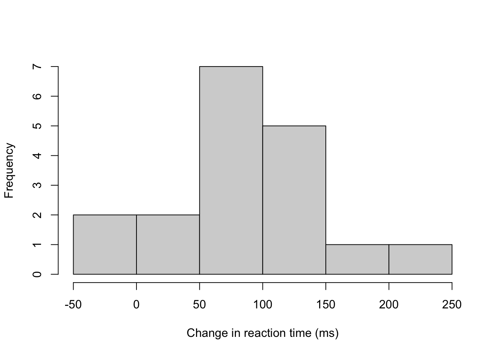

scores <-c(12, 15, 9, 20, 17)group <-c("a", "b", "a", "b", "a")mean(scores[group =="a"]) # = instead of ==, and a missing )
[1] 12.66667
mean(scores[group =="b"]) # maen
[1] 17.5
mean(scores) # Mean: R is case-sensitive
[1] 14.6
summary(scores) # Scores
Min. 1st Qu. Median Mean 3rd Qu. Max.
9.0 12.0 15.0 14.6 17.0 20.0
The silent one is = instead of ==. Inside [ ], group = "a" does not compare anything: R reads it as scores["a"], the element named "a". There is none, so you get NA and no error.
4. A Likert item
answers <-c("often", "never", "sometimes", "always", "often", "rarely","sometimes", "often", "never", "always", "sometimes", "often")table(answers) # alphabetical: "always" comes first
answers
always never often rarely sometimes
2 2 4 1 3
lev <-c("never", "rarely", "sometimes", "often", "always")answers_f <-factor(answers, levels = lev, ordered =TRUE)table(answers_f)
answers_f
never rarely sometimes often always
2 1 3 4 2
score <-as.numeric(answers_f)mean(score)
[1] 3.25
factor(c(answers, "Often"), levels = lev, ordered =TRUE)
[1] often never sometimes always often rarely sometimes
[8] often never always sometimes often <NA>
Levels: never < rarely < sometimes < often < always
"Often" is not one of the levels (case-sensitive), so it becomes NA, silently. Check with sum(is.na(...)) after building a factor.
extra group ID
1 0.7 1 1
2 -1.6 1 2
3 -0.2 1 3
4 -1.2 1 4
5 -0.1 1 5
6 3.4 1 6
summary(sleep)
extra group ID
Min. :-1.600 1:10 1 :2
1st Qu.:-0.025 2:10 2 :2
Median : 0.950 3 :2
Mean : 1.540 4 :2
3rd Qu.: 3.400 5 :2
Max. : 5.500 6 :2
(Other):8
mean(sleep$extra[sleep$group =="1"])
[1] 0.75
mean(sleep$extra[sleep$group =="2"])
[1] 2.33
# both groups list the patients in the same ID order (check sleep$ID), so we can subtractd21 <- sleep$extra[sleep$group =="2"] - sleep$extra[sleep$group =="1"]sum(d21 >0)
### My projectI study **sleep** in *university students* using:- questionnaires- a sleep diary- reaction timesMore on the [Quarto website](https://quarto.org).
10. Bring in your analysis
```{r}#| echo: falsesleepstudy <- read.csv(here::here("data", "sleepstudy.csv"))``````{r}base <- sleepstudy[sleepstudy$Days == 2, ]day9 <- sleepstudy[sleepstudy$Days == 9, ]change <- day9$Reaction - base$Reaction``````{r}#| label: fig-change#| fig-cap: "Change in reaction time from baseline (day 2) to day 9, one value per subject."hist(change, xlab = "Change in reaction time (ms)", main = NULL)```

Figure 1: Change in reaction time from baseline (day 2) to day 9, one value per subject.
@fig-change becomes a numbered, clickable “Figure 1”. With echo: false the chunk still runs, but its code is hidden. This chunk prints nothing, so it disappears from the report.
11. Numbers in the text
After 7 nights with 3 hours in bed, reaction time increased by `{r} round(mean(change))` mson average; `{r} sum(change > 0)` of `{r} length(change)` subjects slowed down (@fig-change).
After 7 nights with 3 hours in bed, reaction time increased by 85 ms on average; 16 of 18 subjects slowed down (Figure 1).
On average, patients slept `{r} round(mean(d21), 2)` hours more with drug 2 than with drug 1,and `{r} sum(d21 > 0)` out of 10 slept more with drug 2.
On average, patients slept 1.58 hours more with drug 2 than with drug 1, and 9 out of 10 slept more with drug 2.
12. Does it render from scratch?
Render fails: object 'x' not found. Rendering starts a fresh R session that never saw the console. Everything the document needs must be created inside it. After Restart R the document still renders: it is self-contained.
sessionInfo()
R version 4.6.1 (2026-06-24)
Platform: aarch64-apple-darwin23
Running under: macOS Golden Gate 27.0.1
Matrix products: default
BLAS: /Library/Frameworks/R.framework/Versions/4.6/Resources/lib/libRblas.0.dylib
LAPACK: /Library/Frameworks/R.framework/Versions/4.6/Resources/lib/libRlapack.dylib; LAPACK version 3.12.1
locale:
[1] C.UTF-8/C.UTF-8/C.UTF-8/C/C.UTF-8/C.UTF-8
time zone: Europe/Rome
tzcode source: internal
attached base packages:
[1] stats graphics grDevices utils datasets methods base
loaded via a namespace (and not attached):
[1] htmlwidgets_1.6.4 compiler_4.6.1 here_1.0.2 fastmap_1.2.0
[5] rprojroot_2.1.1 cli_3.6.6 tools_4.6.1 htmltools_0.5.9
[9] otel_0.2.0 yaml_2.3.12 rmarkdown_2.31 knitr_1.51
[13] jsonlite_2.0.0 xfun_0.60 digest_0.6.39 rlang_1.3.0
[17] evaluate_1.0.5
Bonus
Same text, figure and numbers in all three: one source, three outputs. The PDF and the Word file have no table of contents, because toc sits under html: only. The Word file can be edited, e.g. by a co-author, but edits there are lost at the next render: change the .qmd instead.